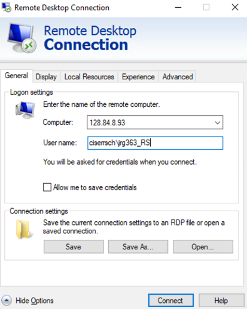
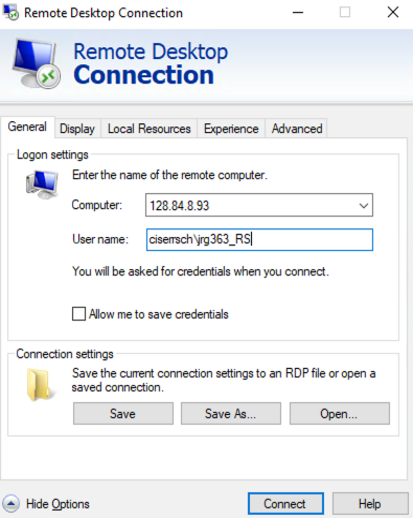

Connecting to remote Windows servers#
We have access to three sets of remote desktop Windows servers:
Cloud CCSS (beta)
CCSS-RS (classic)
RedCloud (summer only)
This can be confusing!
Pay attention to the precise access instructions, as they may be substantially different for each server.
Please be sure to do this:
use the L drive for all “Workspace” folders (i.e., the clone of the Bitbucket repository)
use the D drive for those that are large and need fast storage (but be aware that D drive is also wiped)
ALWAYS
git commitandgit pushall changes before you logout, every time you log out.
Warning
Please note that anything saved in the C drive (Documents, Desktop, or Download folders) and D drive may be deleted at any time (reboot/security update), and there is no way to recover the deleted files.
Please be sure to follow all instructions, in particular the ones about mapping network drives.
You can connect to CCSS Cloud Computing via a web browser or via the a Remote Desktop (RDP) client. Note that for some strange reason, Windows users need to use a DIFFERENT RDP client than the one that comes with their system (and used for CCSS classic). See the instructions provided by CCSS and this link at Microsoft for the right client for your laptop’s OS. Web browser instructions are below, for convenience.
Open the latest version of a web browser (Chrome, Safari, Firefox or Edge). · Go to following link: https://client.wvd.microsoft.com/arm/webclient/ (V1) or the newer one https://client.wvd.microsoft.com/arm/webclient/v2/index.html (V2)
Sign into Microsoft with your regular Cornell University email and password.
Cornell email address. Ex: jrg363@cornell.edu
Cornell email password. Ex: Cornell password
Click on “Research Servers”, and on the pop-up, click on Allow to proceed.
Sign in (again) with your regular Cornell University email and password.
Username: Cornell email address. Ex: jrg363@cornell.edu
Password: Cornell email password. Ex: Cornell password
Mapping Network Drives
You should map the following network drive, following the instructions linked above (see the document “3. Cloud Storage”)
\\ccssilr.file.core.windows.net\lv39to drive letterL:(you can call it “LDILab Drive”)We will be using that drive letter often (including to replace the
S:drive from the CCSS classic nodes).
When instructed, you may also need to map the old S-drive:
\\rschfs2x.ciserrsch.cornell.edu\share\LDIlabSelect “Connect using different credentials”
CISER username:
ciserrsch\[netID]_RS(where[netid]is replaced by… your NetID!)Check the box “Reconnect at login”
Signing out or disconnecting
If you have set a replication package’s code to run, do not sign out/ log off - disconnect.
If you are done for a few days, and have nothing running, then sign out.
Disconnecting
Close the browser tab, or close the application by the usual methods. This will leave your code running!
Warning
CCSS has removed their login instructions at this time!
Disconnecting
If you have set a replication package’s code to run, do not sign out/ log off - disconnect.
If you are done for a few days, and have nothing running, then sign out.
Please be sure to do this:
use the L drive for all “Workspace” folders (i.e., the clone of the Bitbucket repository)
Warning
Please note that anything saved in the C drive (Documents, Desktop, or Download folders) may be deleted at any time (reboot/security update), and there is no way to recover the deleted files.
Install and Connect to CU VPN (see instructions).
Once you have the VPN installed, enter
cuvpn.cuvpn.cornell.edu

Username is Cornell netid with ‘@cornell.edu’ extension
Password is normal Cornell account password
‘Duo’ or ‘second password’:
Type ‘push’ – Sends DUO push to phone
Type ‘sms’ – Sends message to Cornell email inbox
Type ‘phone’ – Receive a phone call.

Set RedCloud account password using https://passwordreset.computing.socialsciences.cornell.edu/ (this is only needed once!)
Enter username as
netid_RSwhen setting password. Ex:jrg363_RS
Install the ‘Remote Desktop’ client:
Windows users should use the built-in “Remote Desktop Client”, not the client used for CCSS Cloud.
Mac users can use the same Microsoft Remote Desktop client (Download Remote Desktop)
Make the connection to the RedCloud server:
Open up the Remote Desktop client
Add or Edit a new connection
Change “Computer” (Windows client) or “PC Name” (macOS) text box to IP address below (depending on Mac or Windows). Enter username as
ciserrsch\netid_RSwhen signing in. ex:ciserrsch\jrg363_RS
IP Address
128.84.8.93
 

Continue log in using the password you created in step 3.
Mapping Network Drives
Network drives are already mapped in RedCloud. To access the shared “L-Drive”, follow these steps:
Open File Explorer
Click ‘This PC’
Underneath ‘Devices and Drives’ you will see the L: drive titled ‘lv39’

Signing out#
It is important to sign out when you do NOT have jobs running. However, when you no longer have a job running, it saves everybody resoures. Your data will still be accessible when you sign back on.
Manually
Open Start Menu
Click on the Profile icon of your name on the left.
Select ‘Sign out’

Automatically
To configure your job to sign out automatically at the end, these are the instructions provided by CCSS:
/* Use the code below at the bottom of the Stata
"main" or "master" script to automatically sign out */
shell shutdown -l
# Add to end of main or last script.
system("shutdown -l")
%Use code below at end of MATLAB main script,
%or last script, to automatically sign out
system("shutdown -l")
#Use code below at bottom of Python/Anaconda script
#to automatically sign out
import os
os.system("shutdown -l")